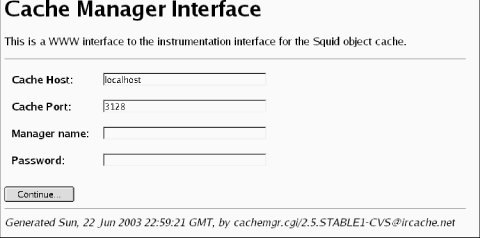

|
|
< Day Day Up > |
|
14.2 The Cache ManagerThe Cache Manager is an interface to Squid for receiving information about various components. It is accessed via normal HTTP requests with a special protocol name: cache_object. A full cache manager URL looks like cache_object://cache.host.name/info. Squid provides two easy ways to access the cache manager information: the command-line squidclient program[1] or the cachemgr.cgi CGI program.
The squidclient utility is a simple HTTP client, with a few special features for use with Squid. For example, you can use a shortcut to request the cache manager pages. Rather than typing a long URL like this: % squidclient cache_object://cache.host.name/info you can use this shorter version: % squidclient mgr:info squidclient is a convenient way to quickly see some of the cache manager pages. It's also useful when you need to save the cache manager output to disk for later analysis. However, some pages, such as the memory utilization table, are difficult to read in a terminal window. They are really designed to be formatted as an HTML page and viewed with your web browser. In that case, you may want to use cachemgr.cgi. To use cachemgr.cgi, you must have an HTTP server that can execute the program. You can use an existing server or install one alongside Squid if you prefer. Keep in mind that the cache manager has only weak security (cleartext passwords). If the HTTP server is on a different host, you need to add its IP address to a cache manager access list (see Section 14.2.2). You may also want to add access controls to the HTTP server so that others can't access cachemgr.cgi. If you use Apache, I recommend making a special cgi-bin directory so you can protect cachemgr.cgi with access controls. For example, create a new directory, and copy the binary to it: # mkdir /usr/local/apache/squid-cgi # cp /usr/local/squid/libexec/cachemgr.cgi /usr/local/apache/squid-cgi # chmod 755 /usr/local/apache/squid-cgi/cachemgr.cgi Now, add a ScriptAlias line to Apache's httpd.conf: ScriptAlias /squid-cgi/ "/usr/local/apache/squid-cgi/" Finally, create an .htaccess file in the squid-cgi directory that contains access controls. To allow requests from only one IP address, use something like this: Allow from 192.168.4.2 Deny from all Once cachemgr.cgi is installed, simply enter the appropriate URL into your web browser. For example: http://www.server.name/squid-cgi/cachemgr.cgi If the CGI program is working, you should see a page with four fields. See Figure 14-1 for an example. The Cache Host field contains the name of the host on which Squid is running—localhost by default. You can set it with the —enable-cachemgr-hostname option when running ./configure. Similarly, Cache Port contains the TCP port number to which Squid listens for requests. It's 3128 by default and can be changed with the —enable-cachemgr-port option. The Manager name and Password fields are for access to protected pages, which I'll talk about shortly. Figure 14-1. The cachemgr.cgi login screenAfter clicking on the Continue... button, you should see a list of all cache manager pages currently available. The following section describes the various pages, some of which are available only when you enable certain features at compile time. 14.2.1 Cache Manager PagesThis section describes the cache manager pages, in the same order in which they appear in the menu. Each section title has both the page name (for use with squidclient), followed by its description. Descriptions that contain an asterisk indicate pages that are disabled by default, unless you configure a password for them. Table 14-1 shows the table of contents and the section number for each page.
14.2.1.1 leaks: Memory Leak TrackingThis page is available only with the ./configure —enable-leakfinder option and is intended for developers trying to track down memory leaks. The page shows each memory pointer being tracked and where and when it was most recently referenced. See the Squid Programmer's Guide (http://www.squid-cache.org/Doc/Prog-Guide/) for more information about Squid's leak-finder feature. 14.2.1.2 mem: Memory UtilizationThe memory utilization page shows a large table of numbers. Each row corresponds to a different pool of memory. The pools have names like acl_list and MemObject. Much of this information is of interest to developers only. However, a few columns are worth mentioning here.
The impact column shows each pool's contribution to the total amount of memory allocated. Usually, the StoreEntry, MD5 digest, and LRU policy node pools take up most of the memory. If you are a developer, you can use this page to look for memory leaks. The column labeled high (hrs) shows the amount of time elapsed since the pool reached its maximum size. A small value in this column may indicate that memory for that pool isn't being freed correctly. You can also use this page to find out if certain features, such as netdb, the ipcache, and client_db consume too much memory. For example, the ClientInfo pool is associated with the client_db feature. The memory utilization page shows you how much memory you can save if you disable client_db in squid.conf. 14.2.1.3 cbdata: Callback Data Registry ContentsThe Callback Data Registry is an internal Squid programming feature for managing memory pointers. Currently, this cache manager page doesn't provide much useful information, apart from the number of active cbdata pointers being tracked. In earlier Squid versions, the cbdata feature was implemented differently and this page provided some information to developers debugging their code. 14.2.1.4 events: Event QueueSquid maintains an event queue for a number of tasks that must occur separately from user requests. Perhaps the most important of these is the periodic task that maintains the disk cache size. Every second or so, this task runs and looks for cache files to remove. On this page, you can see all tasks currently scheduled for execution. Most likely, you'll not find this very interesting unless you are hacking the source code. 14.2.1.5 squidaio_counts: Async IO Function CountersThis page is available only with the ./configure —enable-storeio=aufs option. It shows counters for the number of open, close, read, write, stat, and unlink requests received. For example: ASYNC IO Counters: Operation # Requests open 15318822 close 15318813 cancel 15318813 write 0 read 19237139 stat 0 unlink 2484325 check_callback 311678364 queue 0 The cancel counter is normally equal to the close counter. This is because the close function always calls the cancel function to ensure that any pending I/O operations are ignored. The write counter is zero because this version of Squid performs writes synchronously, even for aufs. The check_callback counter shows how many times the main Squid process has checked the done queue for completed operations. The queue value indicates the current length of the request queue. Normally, the queue length should be less than the number of threads x 5. If you repeatedly observe a queue length larger than this, you may be pushing Squid too hard. Adding more threads may help, but only to a certain point. 14.2.1.6 diskd: DISKD StatsThis page is available only with the ./configure —enable-storeio=diskd option. It provides various statistics relating to the diskd storage scheme. The sent_count and recv_count lines are counters for the number of I/O requests sent between Squid and the group of diskd processes. The two numbers should be very close to each other and could possibly be equal. The difference indicates how many requests are currently outstanding. The max_away value indicates the largest number of outstanding requests. Similarly, the max_shmuse counter indicates the maximum number of shared memory blocks in use at once. These two values are reset (to zero) each time you request this page. Thus, if you wait longer between requests for this page, these maximum counters are likely to be larger. The open_fail_queue_len counter indicates the number of times that the diskd code decided to return failure in response to a request to open a file because the message queue exceeded its configured limit. In other words, this is the number of times a diskd queue reached the Q1 limit. Similarly, block_queue_len shows how many times the Q2 limit has been reached. See the descriptions of Q1 and Q2 in Section 8.5.1. The diskd page also shows how many requests Squid sent to the diskd processes for each of the six I/O operations: open, create, close, unlink, read, and write. It also shows how many times each operation succeeded or failed. Note, these counters are incremented only for requests sent. The open_fail_queue_len check occurs earlier, and in that case, Squid doesn't send a request to a diskd process. 14.2.1.7 config: Current Squid Configuration*This option dumps Squid's current configuration in the squid.conf format. Thus, if you ever accidentally remove the configuration file, you can recover it from the running Squid process. By saving the output to a file, you can also compare (e.g., with the diff command) the running configuration to the saved configuration. Note, however, that comments and blank lines aren't preserved. This option reveals potentially sensitive information, so it's available only with a password. You must add a cache manager password for the config option with the cachemgr_passwd directive. See Section 14.2.2 for specifics. Additionally, these cache manager passwords aren't displayed in this output. 14.2.1.8 comm_incoming: comm_incoming( ) StatsThis page provides low-level network I/O information to developers and Squid wizards. The loop that checks for activity on file descriptors is called comm_poll( ). Over the years, this function has become increasingly complicated in order to improve Squid's performance. One of those performance improvements relates to how often Squid checks certain network sockets relative to the others. For example, the incoming HTTP socket is where Squid accepts new client connections. This socket tends to be busier than a normal data socket because each new connection comes through the incoming socket. To provide good performance, Squid makes an extra effort to check the incoming socket more frequently than the others. At the top of the comm_incoming page, you'll see three incoming interval numbers: one each for ICP, DNS, and HTTP. The interval is the number of normal I/O events that Squid handles before checking the incoming socket again. For example, if incoming_dns_interval is set to 140, Squid checks the incoming DNS socket after 140 I/Os on normal connections. Unless your Squid is very busy, you'll probably see 256 for all incoming intervals. The page also contains three histograms that show how many events occur for each incoming function call. Normally, the majority of the histogram counts occur in the low values. In other words, functions such as comm_select_http_incoming( ) usually handle between one and four events. 14.2.1.9 ipcache: IP Cache Stats and ContentsThe IP cache contains cached results of hostname-to-address lookups. This cache manager page displays quite a lot of information. At the top of this page you'll see a handful of statistics like these: IPcache Entries: 10034 IPcache Requests: 1066445 IPcache Hits: 817880 IPcache Negative Hits: 6846 IPcache Misses: 200497 In this example, you can see that the IP cache contains slightly more than 10,000 entries (hostnames). Since Squid was started, there have been 1,066,445 name-to-address requests, 817,880 of which were cache hits. This is a cache hit ratio of 77%. An IP cache negative hit occurs when Squid receives a subsequent request for a hostname that it recently failed to resolve. Rather than retry the DNS lookup immediately, Squid assumes it will fail again and returns an error message to the user. Following these brief statistics, you'll see a long list of the IP cache contents. For each hostname in the cache, Squid prints six fields:
Here is a short sample (formatted to fit the page): Hostname Flg lstref TTL N
ads.x10.com 9 110 1( 0) 63.211.210.20-OK
us.rd.yahoo.com 640 -340 4( 0) 216.136.232.150-OK
216.136.232.147-OK
216.136.232.149-OK
216.136.232.148-OK
www.movielodge.com 7143 -2161 1( 0) 66.250.223.36-OK
shell.windows.com 10865 -7447 2( 1) 207.46.226.48-BAD
207.46.248.237-OK
www.surf3.net 126810 -40415 1( 0) 212.74.112.95-OK
The list is sorted by the time since last reference. Recently referenced names are at the top of the list, and unused (about to be removed) names are at the bottom. IP addresses are marked OK by default. An address is marked BAD when Squid receives an error or timeout during a TCP connection attempt. Subsequent IP cache requests don't return BAD addresses. If all the host's addresses become BAD, Squid resets them all back to OK. 14.2.1.10 fqdncache: FQDN Cache Stats and ContentsThe FQDN cache is similar to the IP cache, except that it stores address-to-hostname lookups. Another difference is that the FQDN cache doesn't mark hostnames as OK or BAD. Your FQDN cache may be empty, unless you enable the log_fqdn directive, use domain-based ACLs (such as srcdomain, dstdomain, srcdom_regex, and dstdom_regex), or use a redirector. 14.2.1.11 idns: Internal DNS StatisticsSquid contains an internal DNS client implementation, which is enabled by default. Disabling internal DNS with the —disable-internal-dns option also disables this page. Here is some sample output: Internal DNS Statistics:
The Queue:
DELAY SINCE
ID SIZE SENDS FIRST SEND LAST SEND
------ ---- ----- ---------- ---------
001876 44 1 0.010 0.010
001875 44 1 0.010 0.010
Nameservers:
IP ADDRESS # QUERIES # REPLIES
--------------- --------- ---------
192.168.19.124 4889 4844
192.168.19.190 91 51
192.168.10.2 73 39
Rcode Matrix:
RCODE ATTEMPT1 ATTEMPT2 ATTEMPT3
0 6149 4 2
1 0 0 0
2 38 34 32
3 0 0 0
4 0 0 0
5 0 0 0
The Internal DNS page contains three tables. First, you'll see the queue of unanswered queries. Unfortunately, you can't see the contents of the query (the hostname or IP address). Instead, Squid prints the ID, size, number of transmissions, and elapsed times for each query. You should see relatively few queries in the queue. If you see a lot relative to your total traffic rate, make sure your DNS servers are functioning properly. The second table (Nameservers) shows how many queries have been sent to, and replies received from, each DNS server. Squid always queries the first server in the list first. Second (and third, etc.) servers are queried only when the previous server times out for a given query. If you see zero replies from the first address, make sure a server is actually running at that address. Finally, you'll see a table of DNS response codes versus number of attempts. The cell for response code 0 and ATTEMPT1 should have the highest count. Response code 0 indicates success, while others are different types of errors (see RFC 1035 for their descriptions). You may see some smaller numbers for response code 0 in the columns for ATTEMPT2 and ATTEMPT3. This shows the cases when retransmitting a query, after initially receiving an error, resulted in a successful reply. Note that Squid retries only response code 2 (server failure) errors. 14.2.1.12 dns: Dnsserver StatisticsThis cache manager page is available only when you use the —disable-internal-dns option. In this case, Squid uses a number of external dnsserver processes to perform DNS lookups. The dnsserver program is one of a number of helper processes Squid can use. The other types of helpers are redirectors, authenticators, and external ACLs. All Squid's helpers have cache manager pages that display the same statistics. For example: Dnsserver Statistics:
number running: 5 of 5
requests sent: 3001
replies received: 3001
queue length: 0
avg service time: 23.10 msec
# FD PID # Requests Flags Time Offset Request
1 6 20110 128 AB 0.293 0 www.nlanr.net
2 7 20111 45 A 0.000 0 (none)
3 8 20112 4 A 0.000 0 (none)
4 9 20113 0 A 0.000 0 (none)
5 10 20114 0 A 0.000 0 (none)
The number running line shows how many helper processes are running and how many should be running. The dns_children directive specifies how many dnsserver processes to use. The two numbers should match, but they may not if a helper process dies unexpectedly or if some processes could not be started. Recall that when you reconfigure a running Squid instance, all the helpers are killed and restarted. See the discussion in Appendix A. The requests sent and replies received values display the number of requests sent to (and responses received from) the helpers since Squid started. The difference between these two, if any, should correspond to the number of outstanding requests. The queue length line shows how many requests are queued, waiting for one of the helpers to become free. The queue length should usually be zero. If not, you should add more helpers to reduce delays for your users. The avg service time line shows the running average service time for all helpers. Your particular value may depend on numerous factors, such as your network bandwidth and processing power. The next section displays a table of statistics for the running dnsserver processes. The FD column shows the file descriptor for the socket between Squid and each dnsserver process. Similarly, the PID column shows each helper's process ID number. The # Requests column shows how many requests have been sent to each helper. These numbers are zeroed each time you reconfigure Squid, so they many not add up to the total number of requests sent, as shown earlier. Note that Squid always chooses the first idle helper in the list, so the first process should receive the largest number of requests. The last few processes may not receive any requests at all. The Flags column shows a few flags describing the state of the helper process. You should normally see A (for Alive) in each column. Occasionally, when the helper process is handling a request, you'll see B (for Busy). The Time column displays the amount of time elapsed (in seconds) for the current, or last, request. Offset shows how many bytes of the response message Squid has read on the socket. This is almost always zero. Finally, the Request column shows the request that was sent to the helper process. In this case, it is either a hostname or an IP address. 14.2.1.13 redirector: URL Redirector StatsThe Redirector Stats page is available only if you are using a redirector (see Chapter 11). The format of this page is identical to Dnsserver Statistics, described earlier. 14.2.1.14 basicauthenticator: Basic User Authenticator StatsThis page is available only with the ./configure —enable-auth=basic option and when you define a Basic authenticator with the auth_param basic program directive. The format of this page is identical to Dnsserver Statistics, described earlier. 14.2.1.15 digestauthenticator: Digest User Authenticator StatsThis page is available only with the ./configure —enable-auth=digest option and when you define a Digest authenticator with the auth_param digest program directive. The format of this page is identical to Dnsserver Statistics, described earlier. 14.2.1.16 ntlmauthenticator: NTLM User Authenticator StatsThis page is available only with the ./configure —enable-auth=ntlm option and when you define a NTLM authenticator with then auth_param ntlm program directive. The format of this page is similar to Dnsserver Statistics, described earlier, with a few additions. The table of helper processes includes an extra column: # Deferred Requests. NTLM requires "stateful" helpers because the helper processes themselves generate the challenges. Squid receives a challenge from a helper, sends that challenge to a user, and receives a response. Squid must send the user's challenge response back to the same helper for validation. For this protocol to work, Squid must defer some messages to be sent to a helper until the helper is ready to accept them. These helpers also have two new flags: R (reserved or deferred) and P (placeholder). The R flag is set when the helper has at least one deferred request waiting. The P flag is set when Squid is waiting for the NTLM helper to generate a new challenge token. 14.2.1.17 external_acl: External ACL StatsThis page displays helper statistics for your external ACLs. If you don't have any external_acl_type lines in squid.conf, this page will be empty. Otherwise, Squid displays the statistics for each external ACL. The format is the same as for the Dnsserver Statistics. 14.2.1.18 http_headers: HTTP Header StatisticsThis page displays a number of tables containing statistics about HTTP headers. It contains up to four sections: HTCP reply stats (if HTCP is enabled), HTTP request stats, HTTP reply stats, and a final section called HTTP Fields Stats. The HTCP reply statistics refer to HTCP replies received by your cache. The HTTP request section refers to HTTP requests either sent or received by your cache. Similarly, the HTTP reply section refers to replies either sent or received by Squid. The first three sections have the same format. Each section contains three tables: Field type distribution, Cache-control directives distribution, and Number of fields per header distribution. The Field type distribution table shows the number of times that each header value occurs and the percentage of cases in which it occurs. For example, in Table 14-2 you can see that the Accept header occurs in 98% of HTTP requests.
Unfortunately, these (and the following) statistics are tricky because they don't correspond one-to-one for client requests. For example, Squid may report 1,416,268 Accept headers in requests but only 800,542 client requests. This happens because Squid creates more than one HTTP header data structure for each request. In the case of HTTP replies, it seems that Squid may create up to four separate header structures, depending on the circumstances. The Cache-Control directives distribution is similar, but applies only to the values of the Cache-Control header. Table 14-3 shows some of the possible field values.
The Number of fields per header distribution table shows how many headers occur in each request or reply. Usually, you should see something like a normal distribution with a peak around 10-13 headers per request or response. Finally, this page ends with a table labeled Http Fields Stats (replies and requests). For each header, this table shows three values: #alive, %err, and %repeat. The #alive column shows how many instances of this header are currently stored in memory. HTTP headers are kept in memory for both active requests/responses and for completed objects stored in the memory cache. The %err column shows the percentage of times Squid encountered an error while parsing this header. Common errors include incorrect date formats for Date, Expires, Last-Modified, and similar headers. The value -1 indicates no errors. The %repeat column indicates the number of times that a particular header is repeated in a single request or response. These aren't errors because HTTP allows headers to be repeated. 14.2.1.19 via_headers: Via Request HeadersThis page is available only with the ./configure —enable-forw-via-db option. The information in this page is intended to help cache administrators understand where client requests come from. When enabled, Squid counts the number of times each unique Via header occurs in client requests. The Via header contains a list of downstream proxies that have forwarded the request so far. When a proxy forwards a request, it should append its hostname and other identifying information to the Via header. With the information in this database, you can, in theory, reconstruct the hierarchy of proxies forwarding requests through yours. Squid prints the Via database entries in a random order. The output may look something like this: 4 1.0 proxy.firekitten.org:3128 (squid/2.5.STABLE1)
1 1.0 xnsproxy.dyndns.org:3128 (squid/2.5.PRE3-20020125)
1751 1.0 nt04.rmtcc.cc.oh.us:3128 (Squid/2.4.STABLE6),
1.0 tasksmart.rmtcc.cc.oh.us:3128 (Squid/2.4.STABLE7)
137 1.0 reg3.bdg.telco.co.id:8080 (Squid/2.2.STABLE5),
1.0 c1.telco.co.id:8080 (Squid/2.4.STABLE6),
1.0 cache2.telco.co.id:8080 (Squid/2.4.STABLE1)
53 1.0 IS_GW_312:3128 (Squid/2.4.STABLE6)
60 1.0 proxy.kiltron.net:3128 (Squid/2.4.STABLE7)
815 1.1 DORM
In this example, Squid received 1751 requests that previously passed through two other proxies (nt04 and tasksmart). Note that only proxies add a Via header. Requests from user-agents usually don't have the header and, therefore, aren't counted in this database. As you can see, the Via headers reveal some semiprivate information, such as hostnames, port numbers, and software versions. Please take care to respect the privacy of your users if you enable this feature. The Via database is stored entirely in memory and is lost if Squid restarts. The database is cleared whenever you rotate the log files (see Section 13.7). 14.2.1.20 forw_headers: X-Forwarded-For Request HeadersThis page is available only with the ./configure —enable-forw-via-db option. It is similar to the via_headers page, except that it displays the accumulation of X-Forwarded-For headers. X-Forwarded-For is a nonstandard HTTP header that originated with the Squid project. Its value is a list of client IP addresses. In other words, when Squid receives and forwards a request, it appends the client's IP address to this header. It is similar to Via because the header grows each time a proxy passes the request on towards the origin server. The forw_headers output is similar to via_headers. Each line begins with an integer, followed by a header value. The integer indicates how many times that particular X-Forwarded-For value was received. For example: 1 10.37.1.56, 10.1.83.8 3 10.3.33.77, 10.1.83.8 569 116.120.203.54 21 10.65.18.200, 10.1.83.120 31 116.120.204.6 5 10.1.92.7, 10.1.83.120 1 10.3.65.122, 10.3.1.201, 10.1.83.8 2 10.73.73.51, 10.1.83.120 1 10.1.68.141, 10.1.83.8 3 10.1.92.7, 10.1.83.122 As with via_headers, this database is also stored in memory and is lost if Squid exits. The database is cleared each time you rotate Squid's log files. 14.2.1.21 menu: This Cache Manager MenuThis page simply displays a listing of the other cache manager pages. You can use it if you forget the name of a page or if you want to know if certain optional pages are available. When using cachemgr.cgi, each item in the menu is a clickable link. 14.2.1.22 shutdown: Shut Down the Squid Process*This is one of the few cache manager functions that doesn't simply display some information. Rather, this "page" allows you to shut down Squid remotely. To allow shutdown via the cache manager, you must assign it a password with the cachemgr_passwd (see Section 14.2.2) directive in squid.conf. Without a password, the shutdown operation is disabled (but you can still use squid -k shutdown). Because the cache manager has very weak security—passwords are sent in cleartext—I don't recommend enabling this operation. 14.2.1.23 offline_toggle: Toggle offline_mode Setting*This is another function that allows you to control Squid, rather than simply receive information. It also requires a password (see Section 14.2.2) in order to become active. Each time you request this page, Squid toggles the offline_mode setting. Squid reports the new setting on your screen and in cache.log. 14.2.1.24 info: General Runtime InformationThis page provides a lot of basic information about the way that Squid is operating. It is a good starting point for using the cache manager and for tracking down performance problems. At the top, you'll see the release version (e.g., Version 2.5.STABLE4) and two timestamps: the starting and current times. For example: Squid Object Cache: Version 2.5.STABLE4 Start Time: Mon, 22 Sep 2003 03:10:37 GMT Current Time: Mon, 13 Oct 2003 10:25:16 GMT Following that, you'll see seven different sections. The first section, Connection information, displays a few statistics about the number and rate of connections, and the number of cache clients: Connection information for squid:
Number of clients accessing cache: 386
Number of HTTP requests received: 12997469
Number of ICP messages received: 16302149
Number of ICP messages sent: 16310714
Number of queued ICP replies: 0
Request failure ratio: 0.00
Average HTTP requests per minute since start: 423.7
Average ICP messages per minute since start: 1063.2
Select loop called: 400027445 times, 4.601 ms avg
The Cache information section displays hit ratio and cache size statistics: Cache information for squid:
Request Hit Ratios: 5min: 22.6%, 60min: 25.8%
Byte Hit Ratios: 5min: 24.6%, 60min: 38.7%
Request Memory Hit Ratios: 5min: 0.7%, 60min: 1.4%
Request Disk Hit Ratios: 5min: 6.0%, 60min: 12.4%
Storage Swap size: 41457489 KB
Storage Mem size: 10180 KB
Mean Object Size: 14.43 KB
Requests given to unlinkd: 0
The Median Service Times section displays the median of various service time (or response time) distributions. You'll see a value for the last five minutes and for the last hour. All values are in seconds. Squid uses the median, rather than the mean, because these distributions often have heavy tails that can significantly skew the mean value. The output looks like this: Median Service Times (seconds) 5 min 60 min:
HTTP Requests (All): 0.19742 0.15048
Cache Misses: 0.22004 0.17711
Cache Hits: 0.05951 0.04047
Near Hits: 0.37825 0.14252
Not-Modified Replies: 0.01309 0.01387
DNS Lookups: 0.05078 0.03223
ICP Queries: 0.00000 0.07487
The Resource usage section includes a few statistics relating to CPU and memory usage: Resource usage for squid:
UP Time: 1840478.681 seconds
CPU Time: 70571.874 seconds
CPU Usage: 3.83%
CPU Usage, 5 minute avg: 1.33%
CPU Usage, 60 minute avg: 4.41%
Process Data Segment Size via sbrk( ): 342739 KB
Maximum Resident Size: 345612 KB
Page faults with physical i/o: 65375
You'll see a section called Memory usage for squid via mstats( ) if your system has the mstats( ) function. In particular, you'll have this function if the GNU malloc library (libgnumalloc.a) is installed. Squid reports two statistics from mstats( ): Memory usage for squid via mstats( ):
Total space in arena: 415116 KB
Total free: 129649 KB 31%
The Memory accounted for section contains a few tidbits about Squid's internal memory management techniques: Memory accounted for:
Total accounted: 228155 KB
memPoolAlloc calls: 2282058666
memPoolFree calls: 2273301305
The File descriptor usage section shows how many file descriptors are available to Squid and how many are in use: File descriptor usage for squid:
Maximum number of file descriptors: 7372
Largest file desc currently in use: 151
Number of file desc currently in use: 105
Files queued for open: 0
Available number of file descriptors: 7267
Reserved number of file descriptors: 100
Store Disk files open: 0
The Internal Data Structures section gives a quick overview of how many objects are in the cache and how many are on disk or in memory. You can find more detail about Squid's data structure allocations in the mem page (see Section 14.2.1.2). This section has a few stats: Internal Data Structures:
2873586 StoreEntries
1336 StoreEntries with MemObjects
1302 Hot Object Cache Items
2873375 on-disk objects
14.2.1.25 filedescriptors: Process File Descriptor AllocationThis page displays a table of all file descriptors currently opened by Squid. It looks like this: File Type Tout Nread * Nwrite * Remote Address Description ---- ------ ---- -------- -------- ----------------- ------------------------------ 3 File 0 0 0 /usr/local/squid/logs/cache.log 6 File 0 0 2083739 /usr/local/squid/logs/access.log 12 Pipe 0 0 0 unlinkd -> squid 13 File 0 0 2485913 /usr/local/squid/logs/store.log 15 Pipe 0 0 0 squid -> unlinkd 16 Socket 24 220853* 1924 65.200.216.110.80 http://downloads.mp3.com/ 18 Pipe 0 0 0 squid -> diskd 19 Socket 179 476* 1747 202.59.16.30.4171 http://ads.vesperexchange.com/ 21 Pipe 0 0 0 squid -> diskd 22 Socket 20 158783* 998 210.222.20.8.80 http://home.hanmir.com/a 24 Pipe 0 0 0 squid -> diskd 25 Socket 1 0 0* 210.222.20.8.80 http://home.hanmir.com/b 26 Socket 0 9048307* 1578290 .0 DNS Socket 27 Pipe 0 0 0 squid -> diskd 28 Socket 0 0 0* 66.28.234.77.80 http://updates.hotbar.com/ 29 Socket 0 0* 0 .0 HTTP Socket 30 Pipe 0 0 0 squid -> diskd 31 Socket 0 93 1126 127.0.0.1.3434 ncsa_auth #1 32 Socket 0 3 31 127.0.0.1.3438 ncsa_auth #3 33 Socket 0 0 0 127.0.0.1.3440 ncsa_auth #4 34 Socket 164 8835* 1070222* 212.47.19.52.2201 http://www.eyyubyaqubov.com/ 35 Socket 177 6137* 249899* 212.47.19.25.3044 http://files10.rarlab.com/ 36 Socket 0 0 0 127.0.0.1.3442 ncsa_auth #5 37 Socket 7 158783* 774 210.222.20.8.80 http://home.hanmir.com/c 38 Socket 166 1000* 148415* 202.17.13.8.5787 http://home.hanmir.com/d The table has seven columns:
By default, the File Descriptor page isn't password-protected. However, you may want to give it a password because it contains some sensitive and, perhaps, personally identifiable information. 14.2.1.26 objects: All Cache ObjectsRequesting this page results in a list of all objects in the cache. Be careful with this page because it can be extremely long. Furthermore, it contains low-level information that is probably useful only to developers. For each cached object, Squid prints a sequence of lines, most of which look like this: KEY FF1F6736BCC167A4C3F93275A126C5F5
STORE_OK NOT_IN_MEMORY SWAPOUT_DONE PING_NONE
CACHABLE,DISPATCHED,VALIDATED
LV:1020824321 LU:1020824671 LM:1020821288 EX:-1
0 locks, 0 clients, 1 refs
Swap Dir 0, File 0X010AEE
The first line shows the cache key—a 128-bit MD5 checksum of the URI. The same MD5 checksum appears in store.log and in the metadata at the beginning of each response cached on disk. The second line shows four state variables of the StoreEntry data structure: store_status, mem_status, swap_status, and ping_status. Refer to the Squid source code if you'd like more information about them. The third line is a list of the StoreEntry flags that are set. Search the source code for e->flags for more information. The fourth line shows the values of four timestamps: last-validation, last-use, last-modification, and expiration. The last-modification and expiration timestamps are taken from the origin server's HTTP response. The others are maintained by Squid. The fifth line shows a few counters: locks, clients, and references. An entry with locks can't be removed. The clients counter shows how many clients are currently receiving data for this object. The refs counter shows how many times the object has been requested. The sixth line shows the object's index to the on-disk storage. Each object has a 7-bit swap directory index and a 25-bit file number. Each storage scheme has a function to map these numbers into pathnames. 14.2.1.27 vm_objects: In-Memory and In-Transit ObjectsThis page is similar to All Cache Objects, except that it displays only objects that have a MemObject data structure. In other words, objects that are currently being requested or are stored in the memory cache. These objects are displayed like this: KEY 5107D49BA7F9C6BA9559E006D6DDC4B2
GET http://www.rpgplanet.com/ac2hq/cartography/dynamic/LinvakMassif.jpg
STORE_PENDING NOT_IN_MEMORY SWAPOUT_WRITING PING_DONE
CACHABLE,DISPATCHED,VALIDATED
LV:1043286120 LU:1043286122 LM:1036015230 EX:-1
4 locks, 1 clients, 1 refs
Swap Dir 1, File 00X31BD9
inmem_lo: 184784
inmem_hi: 229840
swapout: 229376 bytes queued
swapout: 229509 bytes written
Client #0, 1533a1018
copy_offset: 217552
seen_offset: 217552
copy_size: 4096
flags:
As you can see, many of the lines are the same. However, the in-memory objects have a few additional lines. Directly following the cache key (MD5 checksum), Squid prints the request method and URI. The inmem_lo and inmem_hi lines are byte offsets of the HTTP reply. They indicate the section of object data currently in memory. In most cases, the difference between these two should be less than the value of the maximum_object_size_in_memory directive. The swapout: bytes queued line shows the offset for how many bytes have been given to the storage layer for writing. For objects in the SWAPOUT_DONE state, this value is the same as the object size. If the state is SWAPOUT_WRITING, Squid also shows the bytes written line, which indicates how many bytes have been successfully stored on disk. If one or more clients are currently receiving the response, you'll see a section for each of them (Client #0 in this example). For each client, Squid reports another pair of offset values. The first, copy_offset, is the starting point for the last time the client-side asked for data from the storage system. The second, seen_offset, is the point at which the response data has been sent to the client. Note that copy_offset is always greater than or equal to seen_offset. The copy_size indicates the maximum amount of data the client can receive from the storage system. 14.2.1.28 openfd_objects: Objects with Swapout Files OpenThe format of this page is the same as for In-Memory and In-Transit Objects. The objects reported on this page should all be in the SWAPOUT_WRITING state. The page is primarily useful to developers when trying to track down file-descriptor leaks. 14.2.1.29 io: Server-Side Network read( ) Size HistogramsThis page displays a histogram for each of the following four server-side protocols: HTTP, FTP, Gopher, and WAIS. The histograms show how many bytes each read( ) call received. The information is primarily useful to developers for tuning buffer sizes and other aspects of the source code. The bins of the histogram are logarithmic to accommodate the large scale of read sizes. Here is an example: HTTP I/O
number of reads: 9016088
Read Histogram:
1- 1: 3082 0%
2- 2: 583 0%
3- 4: 905 0%
5- 8: 2666 0%
9- 16: 16690 0%
17- 32: 88046 1%
33- 64: 19712 0%
65- 128: 116655 1%
129- 256: 749259 8%
257- 512: 633075 7%
513- 1024: 903145 10%
1025- 2048: 3664862 41%
2049- 4096: 1643747 18%
4097- 8192: 789796 9%
8193-16384: 99476 1%
16385-32768: 30059 0%
In this case, you can see that the bin for 1025-2048 bytes is the most popular. When reading from an HTTP server, Squid got between 1025 and 2048 bytes per read 41% of the time. 14.2.1.30 counters: Traffic and Resource CountersSquid maintains a data structure of counters. Actually, it is an array of counters. Squid shifts the array every 60 seconds and calculates 1-, 5-, and 60-minute averages from this array. This page is simply a dump of the current counter values in a format more suitable for computer processing than for reading by humans. The counters are as follows:
14.2.1.31 peer_select: Peer Selection AlgorithmsThis page contains a lot of low-level detail about cache digests that I won't discuss. Most of the numbers are meaningful only to the developers that originally wrote the Cache Digest implementation. However, at the end of this page is a little table that compares Algorithm usage: Algorithm usage: Cache Digest: 27 ( 24%) Icp: 84 ( 76%) Total: 111 (100%) In this example, you can see that Squid sent 111 requests to one of its neighbors: 27 are due to Cache Digests and 84 are due to ICP. In this context, ICP also includes HTCP. 14.2.1.32 digest_stats: Cache Digest and ICP BlobThis page is actually just a concatenation of the following other cache manager pages:
Its only purpose is to enable developers to take a snapshot of a number of statistics with a single request. 14.2.1.33 5min: 5 Minute Average of CountersThis page shows a five-minute average of the data in the Traffic and Resource Counters page. In addition to the counters mentioned in Section 14.2.1.30, this page also contains the following values:
14.2.1.34 60min: 60 Minute Average of CountersThis page shows a 60-minute average of the data in the Traffic and Resource Counters page. The descriptions are identical to those for the 5 Minute Average of Counters page, except the measurements are taken over one hour. 14.2.1.35 utilization: Cache UtilizationThis page displays averages of the counters (see Traffic and Resource Counters and 5 Minute Average of Counters) over various time spans. The same values are reported for 5-minute, 15-minute, 1-hour, 8-hour, 1-day, and 3-day intervals. This page, with a poorly chosen name, exists primarily so that developers can take a quick snapshot of statistics for testing purposes. 14.2.1.36 histograms: Full Histogram CountsThis page displays the current histogram values (since Squid was started) for a number of measurements:
These are the same measurements described in Section 14.2.1.33, except that here Squid gives the full histogram, instead of the mean or median. Depending on the type of histogram, you may see two or three columns. The first column is the bin number and lower bound on the bin value. The second column is the number of counts for that bin. The optional third column is the number of counts divided by the "size" of the bin. The last column is probably only interesting for log-based histograms, in which the bin size isn't constant. 14.2.1.37 active_requests: Client-Side Active RequestsThis page shows a list of currently active client-side requests. The list is sorted starting with the most recent, and ending with the oldest requests. The information given here is primarily useful to developers. A typical entry looks like this: Connection: 0x84ecd10
FD 132, read 1273, wrote 12182
FD desc: http://www.squid-cache.org/Doc/FAQ/FAQ.html
in: buf 0xa063000, offset 0, size 4096
peer: 206.168.0.9:1058
me: 192.43.244.42:3128
nrequests: 3
defer: n 0, until 0
uri http://www.squid-cache.org/Doc/FAQ/FAQ.html
log_type TCP_MISS
out.offset 0, out.size 0
req_sz 392
entry 0x960c680/3B49762ABF444D80B6465552F6CFAD4C
old_entry 0x0/N/A
start 1066036250.669955 (2.240814 seconds ago)
14.2.1.38 store_digest: Store DigestThis page is available only with the ./configure —enable-cache-digests option. It displays a few statistics about Squid's own cache digest. It looks like this: store digest: size: 620307 bytes
entries: count: 324806 capacity: 992490 util: 33%
deletion attempts: 0
bits: per entry: 5 on: 1141065 capacity: 4962456 util: 23%
bit-seq: count: 1757902 avg.len: 2.82
added: 324806 rejected: 611203 ( 65.30 %) del-ed: 0
collisions: on add: 0.08 % on rej: 0.07 %
14.2.1.39 storedir: Store Directory StatsThis page displays some statistics from the storage system. First, you'll see a few global values. For example: Store Directory Statistics: Store Entries : 2873564 Maximum Swap Size : 46080000 KB Current Store Swap Size: 41461672 KB Current Capacity : 90% used, 10% free
Next, you'll see a section for each cache_dir. It looks something like this: Store Directory #1 (diskd): /cache1 FS Block Size 1024 Bytes First level subdirectories: 16 Second level subdirectories: 64 Maximum Size: 15360000 KB Current Size: 13823996 KB Percent Used: 90.00% Filemap bits in use: 958439 of 2097152 (46%) Filesystem Space in use: 14030485/17370434 KB (81%) Filesystem Inodes in use: 959440/4340990 (22%) Flags: SELECTED Pending operations: 0 Removal policy: lru LRU reference age: 23.63 days
The next few lines are actually storage scheme-dependent. For the most part, ufs, aufs, and diskd are very similar and all report the same statistics.
That's the end of the scheme-specific data. The remaining lines are specific to the cache_dir replacement algorithm:
14.2.1.40 store_check_cachable_stats: storeCheckCachable( ) StatsThis page displays a table of counters from the storeCheckCachable( ) function. It is called for most responses, just before Squid attempts to open a disk file for writing.
The table includes the following lines:
In some versions of Squid, this counter is always zero because storeReleaseRequest( ) is always called if the response size doesn't match the expected content length.
14.2.1.41 store_io: Store IO Interface StatsThis short table contains four lines related to allocating disk storage for a new response. For example: Store IO Interface Stats create.calls 2825670 create.select_fail 0 create.create_fail 0 create.success 2825670
14.2.1.42 pconn: Persistent Connection Utilization HistogramsThis page displays two histograms. The first is for client-side persistent connection usage. For example: Client-side persistent connection counts:
req/
conn count
---- ---------
0 74292
1 14362705
2 3545955
3 2068486
4 1411423
5 1030023
6 778722
7 603649
8 474592
9 376154
10 301396
On the left is the number of requests per connection. On the right is the number of times a client connection had that many requests. Most likely, you'll see that one request/connection has the highest count and that the counts decrease as the number of requests/connection increases. The second table has the same information, but for server-side HTTP connections. You should see the same sort of pattern here, with one request/connection having the highest count. 14.2.1.43 refresh: Refresh Algorithm StatisticsThe refresh page shows a few tables relating to the freshness of cached objects. Internally, Squid keeps track of the way different modules use the refresh functions. The first table shows how many calls each module has made. The really interesting data is contained in the remaining tables, however. The HTTP histogram shows the breakdown of freshness checks for client HTTP requests. For example: HTTP histogram:
Count %Total Category
0 0.00 Fresh: request max-stale wildcard
0 0.00 Fresh: request max-stale value
173984 9.76 Fresh: expires time not reached
462757 25.97 Fresh: refresh_pattern last-mod factor percentage
42 0.00 Fresh: refresh_pattern min value
0 0.00 Fresh: refresh_pattern override expires
0 0.00 Fresh: refresh_pattern override lastmod
5521 0.31 Stale: response has must-revalidate
0 0.00 Stale: changed reload into IMS
0 0.00 Stale: request has no-cache directive
470912 26.43 Stale: age exceeds request max-age value
455073 25.54 Stale: expires time reached
65612 3.68 Stale: refresh_pattern max age rule
144706 8.12 Stale: refresh_pattern last-mod factor percentage
3274 0.18 Stale: by default
1781881 100.00 TOTAL
Note, the rules aren't necessarily evaluated in the order in which they appear in the table. Here's what each line means:
Following the HTTP histogram, you'll see the same data for ICP, HTCP, Cache Digests, and On Store. The On Store table represents freshness checks for responses that are coming into Squid's cache (i.e., cachable misses). Note, however, that Squid does store stale responses (as long as they have a cache validator). Don't be alarmed if you see some stale responses in the On Store histogram. 14.2.1.44 delay: Delay Pool LevelsThis page displays the Delay Pool statistics. Squid has three classes of pools (1, 2, 3) and three types of buckets (aggregate, individual, and network). A class 1 pool has only an aggregate bucket, a class 2 pool has both aggregate and individual, and a class 3 pool has all three. An aggregate bucket looks like this: Aggregate:
Max: 16384
Restore: 4096
Current: 6144
The values are all in bytes. Max is the size of the bucket, which is the number of bytes the bucket can hold. Restore is the number of bytes added to the bucket each second. Current is the number of bytes currently in the bucket. If nobody uses the bytes, the bucket fills until it reaches the maximum size. An individual bucket is almost the same: Individual:
Max: 20000
Restore: 5000
Current: 1:18760 9:4475 14:20000
The only difference is that the Current line displays a number of different values, one for each host number. The host number is defined as the last octet of an IPv4 address. In this example, the host numbers are 1, 9, and 14. In a class 2 delay pool, the host numbers from different networks share the same bucket. For example, 192.168.0.1 and 192.168.44.1 both share the bucket for host number 1. In a class 3 pool, however, each network number (third octet) has its own array of individual buckets. Thus, for a class 3 pool, the individual buckets appear this way: Individual:
Max: 20000
Rate: 5000
Current [Network 0]: 1:12000
Current [Network 44]: 1:17000
A network bucket (for class 3 pools only) is similar as well: Network:
Max: 30000
Rate: 15000
Current: 0:3912 7:30000
In this case, the Current line shows the current level for each network number (third octet). See Appendix C for more information about Delay Pools. 14.2.1.45 forward: Request Forwarding StatisticsThe table on this page shows how many attempts were made to forward each request, with their results. Upon receiving some status codes, Squid gives up immediately. For others, however, Squid keeps trying. Each row of the table is a different HTTP status code (200, 401, 404, etc.). Each column is the number of forwarding attempts. The value in each cell is how many requests were forwarded that many times, resulting in the corresponding status code. This information helps developers understand whether or not it makes sense to retry a request after receiving certain types of responses. Here is an example: Status try#1 try#2 try#3 try#4 try#5 try#6 try#7 try#8 try#9 try#10 0 1 0 0 0 0 0 0 0 0 0 200 3970083 111015 51185 29002 18242 12097 8191 6080 4490 6140 201 57 0 0 0 0 0 0 0 0 0 202 162 0 0 0 0 0 0 0 0 0 204 1321 11 0 0 0 0 0 0 0 0 206 624288 453 25 9 4 3 0 1 0 0 207 147 0 0 0 0 0 0 0 0 0 300 23 0 0 0 0 0 0 0 0 0 301 23500 25 2 0 0 0 1 0 0 0 302 339332 3806 153 26 6 4 2 3 0 1 303 101 1 0 0 0 0 0 0 0 0 304 772831 3510 125 21 7 8 8 5 3 2 307 7 0 0 0 0 0 0 0 0 0 400 529 1 0 0 0 0 0 0 0 0 401 1559 0 0 0 0 0 0 0 0 0 403 5098 30 1 1 0 0 0 0 0 0 404 100800 216 25 6 7 1 2 4 1 5 405 1 0 0 0 0 0 0 0 0 0 ... A value of 29,002 in the cell under try#4 and in the row for status 200 means that there were 29,002 times when Squid finally got a successful response after 4 forwarding attempts. If you look at the table, you may see some unknown status codes. Squid keeps track of all status codes up to 600, even those it doesn't know about. See Table 13-1 for the list of codes that Squid does know about. 14.2.1.46 client_list: Cache Client ListThe cache client list shows a handful of statistics for each client IP address accessing Squid, which looks like this: Address: 206.168.0.9
Name: 206.168.0.9
Currently established connections: 0
ICP Requests 59000
UDP_HIT 1609 3%
UDP_MISS 57388 97%
UDP_INVALID 3 0%
HTTP Requests 11281
TCP_HIT 656 6%
TCP_MISS 3464 31%
TCP_REFRESH_HIT 4477 40%
TCP_REFRESH_MISS 767 7%
TCP_CLIENT_REFRESH_M 397 4%
TCP_IMS_HIT 1082 10%
TCP_SWAPFAIL_MISS 7 0%
TCP_NEGATIVE_HIT 13 0%
TCP_MEM_HIT 418 4%
The Address line, obviously, shows the client's IP address. Name is the same, unless you have log_fqdn enabled, and the DNS reports a name for the address. The Currently established connections line shows how many HTTP connections are currently open between the client and Squid. If the client has sent any ICP queries, you'll see a breakdown of the results here. In this example, only 3% of this client's ICP queries were hits. Note, this page doesn't currently include HTCP result statistics. Finally, you'll see a breakdown of HTTP request result codes. The client database consumes a fair amount of memory, especially if you have a large number of client IP addresses accessing Squid. You can disable the database entirely, thus conserving memory, with the client_db directive. Also note that there is no way to clear the counters or to remove entries while Squid is running. 14.2.1.47 netdb: Network Measurement DatabaseThis page is available only with the ./configure —enable-icmp option (see Section 10.5). On this page you'll find quite a lot of IP addresses, hostnames, packet counters, and RTT values. It looks something like this: Network DB Statistics:
Network recv/sent RTT Hops Hostnames
165.123.34.0 7/ 7 12.7 8.6 onlinebooks.library.upenn.edu
www.library.upenn.edu
digital.library.upenn.edu
rtp.us.ircache.net 17.0 11.0
sj.us.ircache.net 71.0 17.3
209.202.204.0 4/ 4 12.8 10.0 adbuyer3.lycos.com
rtp.us.ircache.net 20.6 15.0
sj.us.ircache.net 77.6 15.0
63.151.139.0 17/ 17 12.8 9.0 www.originlab.com
sj.us.ircache.net 80.0 12.0
209.68.20.0 23/ 23 12.8 11.7 www6.tomshardware.com www.guestbook.nu
rtp.us.ircache.net 34.9 15.1
sj.us.ircache.net 73.9 14.7
Each /24 network is listed, in order of increasing round-trip time. You can see how many ICMP pings have been sent and received, the average RTT, and the estimated router hop-count. The Hostnames field shows the hostnames that resolve to addresses within the /24 network. If Squid has ICMP measurements from its neighbors for the network, those are printed as well. In this example, the local cache is closer to all the networks than its neighbors (rtp.us.ircache.net and sj.us.ircache.net). 14.2.1.48 asndb: AS Number DatabaseAlthough this page is always available, it contains interesting data only if you are using one of the Autonomous System (AS) ACLs, such as src_as or dst_as. When you use an AS-based ACL, Squid queries the Routing Arbiter database (whois.ra.net) to discover the IP networks associated with the AS number. The results of those queries are displayed on this page. The output looks like this: Address AS Numbers 128.98.0.0/16 7 146.80.0.0/16 7 192.5.28.0/24 7 192.5.29.0/24 7 192.5.30.0/24 7 192.107.178.0/24 7 192.135.183.0/24 5637 194.61.177.0/24 7 194.61.180.0/24 7 194.61.183.0/24 7 194.83.162.0/24 7 14.2.1.49 carp: CARP InformationThis page is available only with the ./configure —enable-carp option and if you have some CARP parents configured. Squid displays a table of all CARP parents, which looks like this: Hostname Hash Multiplier Factor Actual bo1.us.ircache.net f142425b 0.894427 0.400000 0.527950 bo2.us.ircache.net 12180f04 1.118034 0.600000 0.472050 Hash is the neighbor's hash value from the CARP algorithm. Multiplier is another value used by the algorithm. Factor is taken from the carp-load-factor option on the cache_dir line in squid.conf. Actual is the actual distribution of requests among the CARP parents. Ideally, it should match the Factor value. 14.2.1.50 server_list: Peer Cache StatisticsThis page displays various counters and statistics for your neighbor caches. For example: Sibling : pa.us.ircache.net/3128/4827
Flags : htcp
Address[0] : 192.6.19.203
Status : Up
AVG RTT : 14 msec
OPEN CONNS : 19
LAST QUERY : 4 seconds ago
LAST REPLY : 4 seconds ago
PINGS SENT : 9119
PINGS ACKED: 9115 100%
FETCHES : 109 1%
IGNORED : 9114 100%
Histogram of PINGS ACKED:
Misses 9114 100%
Hits 1 0%
keep-alive ratio: 100%
14.2.1.51 non_peers: List of Unknown Sites Sending ICP messagesThis page shows a list of clients that send unauthorized ICP (but not HTCP) queries. The list is the same format as the Cache Client List page. 14.2.2 Cache Manager Access ControlsThe cache manager interface provides a lot of information. Much of it is sensitive and should be kept private. For example, the Cache Client List reveals the IP addresses of users, the Process Filedescriptor Allocation page shows URIs currently being requested, and the Current Squid Configuration displays the values from squid.conf, including passwords and access control rules. To keep unwanted visitors from browsing the cache manager pages, you must carefully configure access to it. 14.2.2.1 http_accessAll cache manager requests use the pseudo-protocol scheme cache_object. The best way to protect the cache manager is restrict the IP addresses allowed to make cache_object requests. The default squid.conf contains these lines: acl Manager proto cache_object acl Localhost src 127.0.0.1/255.255.255.255 http_access allow Manager Localhost http_access deny Manager Thus, cache manager requests from the local host (127.0.0.1) are allowed, but all others are denied. If you have additional trusted hosts, you may want to add them to the access rules also. Make sure these lines are at the top of your http_access rules. 14.2.2.2 cachemgr_passwdYou may also want to modify the default cachemgr_passwd settings. Some of the cache manager pages require a password, so you won't be able to view those until you add one. For example, if you want to use the Current Squid Configuration page, you must assign it a password: cachemgr_passwd JeckCy config You can have a number of different passwords, but each action may have only one password. You may want to use a different password for less sensitive pages: cachemgr_passwd byDroth filedescriptors client_list netdb To disable a cache manager action, use disable as the password: cachemgr_passwd disable netdb To enable the sensitive actions without requiring a password, use none: cachemgr_passwd none offline_toggle If you want to give the same password to all actions, use the keyword all: cachemgr_passwd Knoujush all When using the command-line cache manager interface (e.g., squidclient), put an @ sign and the password after the action name. For example: squidclient mgr:objects@byDroth | less Note that cache manager passwords aren't printed when you request the Current Squid Configuration page (see Section 14.2.1.7). 14.2.2.3 cachemgr.cgiIf you use cachemgr.cgi, the IP address of your HTTP server must be able to make cache manager requests to Squid. This opens up a back-door security hole. Anyone who can execute the CGI program on your server will be able to view the cache manager pages. The passwords described earlier can help, but you may also want to install access controls on your HTTP server so that only certain people can execute cachemgr.cgi. The main cachemgr.cgi page has a form with Username and Password fields. The username is purely informational. If you have multiple administrators in your organization, each person can enter their own name for auditing purposes. If you leave the password field blank, the password-protected pages are disabled. Entering a password activates links for those pages. cachemgr.cgi is stateless, so the password must be included as a URI parameter in links. Furthermore, the password encoding scheme isn't very sophisticated and trivial to break. Because many applications (such as Squid!) log the URIs of HTTP requests, your cache-manager password may be logged or even observed by an untrusted third party. If you really want to keep your cache manager passwords secret, never use them with cachemgr.cgi or from any remote system. 14.2.3 Reasons to Dislike the Cache ManagerThe cache manager interface leaves much to be desired. It has a very unpolished feel. Novice administrators will probably find it difficult to use and understand. One of the first problems you might notice is that the menu (or table of contents) is unorganized. There is no logical order or grouping. The first items in the list provide low-level information primarily meant for developers. Currently, the order is determined by the initialization sequence in the source code. The output is often ugly. The cachemgr.cgi program renders very bland-looking HTML pages. There are no icons or graphics of any kind. Furthermore, many of the pages are simply presented as unformatted text. cachemgr.cgi doesn't do much more than format tab-delimited lines as HTML tables and put <A> tags around some URIs. Some of the cache manager pages are structured so that the output can be easily parsed by computer programs, rather than humans. By today's standards, the cache manager has very weak security. You are essentially forced to use address-based controls and cleartext passwords. If you allow cache manager requests only from localhost, and your system security is good, you'll be relatively safe. 14.2.4 Squid-RRDI personally use the cache manager to populate a number of RRDTool databases (http://www.rrdtool.com/). RRDTool is nice package for storing and displaying time-series data. It allows you to archive data at different time scales (e.g., days, weeks, months, years) in a database that doesn't grow in size over time. I use a Perl script that runs every five minutes from cron. It issues cache manager requests for a number of pages and extracts the values that I am interested in. These values are stored in the RRD files. RRDTool also generates nice-looking graphs, from either a CGI script or standalone program. I use the CGI program and check the graphs at least daily. See Figure 14-2 for some samples from one of my own Squid boxes. Figure 14-2. Some sample RRD graphs from RRDTool and cache manager dataYou can find my scripts and instructions for integrating the cache manager and RRDTool at http://www.squid-cache.org/~wessels/squid-rrd/. |
|
|
< Day Day Up > |
|